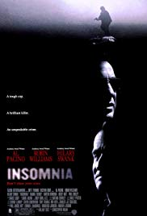
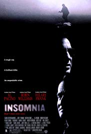

BIOGRAFIA
Sobre Mi
Fecha de Nacimiento - 30 de Julio 1970 Westminster, Londres. Padre Ingles y madre Estadounidense.
Soy de Westminster, un barrio del centro de Londres donde empeze a realizar películas a la edad de siete años usando la cámara Súper 8 de mi padre.
Educacion
Premios
- Premio de la Crítica Cinematográfica al mejor guion original 2001 (Memento, 2001)
- Premio Independent Spirit al mejor director 2001 (Memento)
- Premio Independent Spirit al mejor guion 2001 (Memento)
Ocupacion
Director de cine
guionista
productor de cine
camarógrafo
productor ejecutivo
editor de cine y director de fotografía


 
